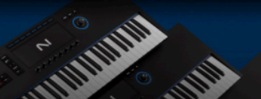
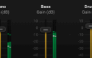
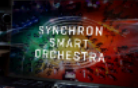
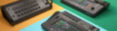

hispasonic
Revista
Foros
Musica
Equipo
Mercasonic

Native Instruments Kontrol S49, S61 y S88 mk3 añaden aftertouch polifonico

Acon Digital Remix: la separacion automatica de pistas IA tiene otro contendiente
Yamaha FGDP-50 y FGDP-30, finger drumming autosuficiente
Focal Trio6, nuevo monitor de tres vias tope de gama del fabricante frances
Focal presenta Trio6, un nuevo miembro de su familia ST6 llamado a ser el buque insignia de sus monitores de tres vias. Prometen transparencia, fiabilidad y una respuesta de frecuencias desde 35 Hz a 40 kH2

VSL Synchron Smart Orchestra, una orquesta "inteligente" completa en tu teclado
Vianna Symphonic Library lanza Snchron Smart Orchestra, un nuevo plugin todo en uno que permite distribuir una orquesta completa a lo largo de un teclado controlador de forma inteligente. Su precio de lanzamiento es de 175.
Analogue Solutions Maximus 4V, un analógico de 4 voces como el Maximus, pero en "minimus
Analogue Solutions lanza Maximus 4V, una versión de 4 voces de su sintetizador analógico polifónico semimodular Maximus AS300, reduciendo así la polifonía, el tamaño y el precio a la mitad.
NO PASES POR ALTO
Focusrite Scarlett 4: la nueva generacion de interfaces ya esta aqui
Como limpiar los contactos del teclado de tu sintetizador
